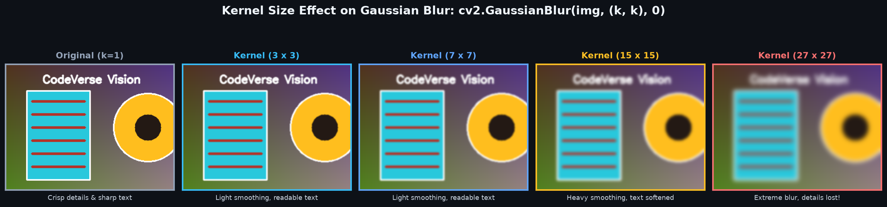
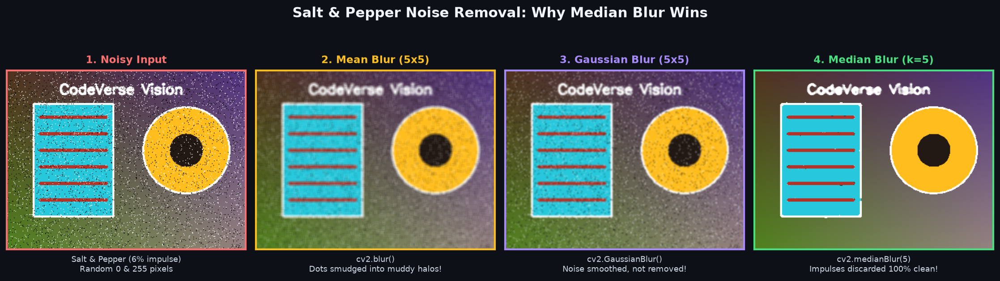
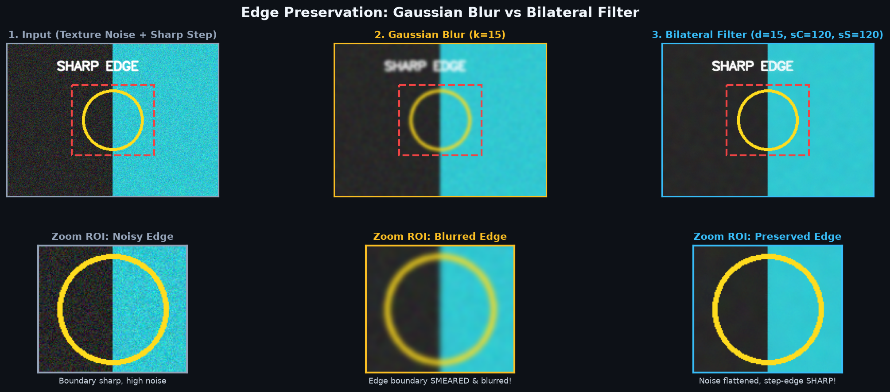
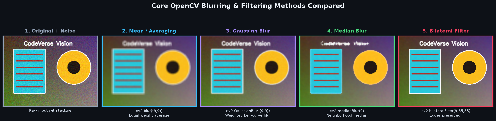

Master fundamental image smoothing and noise reduction techniques in OpenCV: Averaging blur, Gaussian weighted blur, Salt-and-Pepper noise removal using Median blur, and Edge-preserving Bilateral filtering.
Real-world images kabhi bhi 100% perfect nahi aate. Smartphone se low-light mein click ki hui photos mein graininess (noise) hoti hai, CCTV cameras mein sensor static hota hai, aur scanned documents mein chote spots hote hain. Is noise ko hatakar image ko clean karne ki process ko Image Filtering kehte hain.
Technical bhasha mein: Image filtering ek mathematical operation hai jisme ek choti sliding window (jise Kernel ya Mask kehte hain) image ke har pixel aur uske aas-paas ke neighbors ke upar ghoomti hai aur naye pixel values calculate karti hai.
Camera sensor static, high-ISO graininess, aur random pixel variations ko smooth karke clean image produce karna.
Edge detection (Canny), contour finding, ya object detection chalane se pehle image ko halka blur kiya jata hai taaki false edges detect na hon.
Blurring ek low-pass filtering operation hai jo image ki sharp transitions aur high-frequency details (jaise sharp edges aur rapid pixel changes) ko soften kar deta hai.
OpenCV mein blurring hamesha ek Kernel (ek choti matrix jaise 3×3, 5×5, ya 7×7) ke dwara apply ki jaati hai:
15×15 vs 3×3), blurring utni hi zyada intense hogi.3×3 ya 5×5) standard hota hai.

cv2.blur()Averaging blur sabse basic smoothing filter hai. Yeh kernel window ke andar maujood sabhi pixels ka simple arithmetic average (mean) nikaalta hai aur center pixel ko us average se replace kar deta hai.
For example, ek 3×3 kernel mein 9 pixels hote hain. Sabhi 9 pixels ke values ko jodkar 9 se divide kar diya jata hai:
import cv2
# Load image
img = cv2.imread("scene.jpg")
# Apply Averaging Blur with a (5, 5) kernel
blurred_avg = cv2.blur(img, ksize=(5, 5))
# Bigger kernel = stronger blur
blurred_heavy = cv2.blur(img, ksize=(11, 11))Parameters:
ksize=(width, height): Kernel ke dimensions. Dono odd numbers hone chahiye.cv2.GaussianBlur()Simple averaging mein sabhi neighbor pixels ko barabar (equal) importance milti hai. Lekin Gaussian Blur mein center ke nazdeek wale pixels ko zyada weight milta hai aur door wale pixels ko kam weight milta hai (Bell-curve Gaussian distribution ke mutabiq).
Is wajah se Gaussian blur natural-looking smoothing produce karta hai bina kisi unnatural square artifacts ke. Yeh computer vision ka sabse popular smoothing filter hai!
import cv2
# Apply Gaussian Blur
# ksize must have odd dimensions: (5, 5), (7, 7), etc.
# sigmaX=0 means OpenCV automatically computes sigma from kernel size
gaussian_img = cv2.GaussianBlur(img, ksize=(5, 5), sigmaX=0)Parameters:
ksize=(w, h): Odd positive integers (e.g., (5, 5), (7, 7)).sigmaX: Gaussian kernel standard deviation along X-axis. Jab aap 0 pass karte hain, to OpenCV formula ke hisaab se optimum sigma khud calculate kar leta hai: sigma = 0.3 * ((ksize - 1) * 0.5 - 1) + 0.8.cv2.medianBlur() & Salt-and-Pepper NoiseAveraging aur Gaussian blur tab fail ho jate hain jab image mein Salt-and-Pepper Noise (achanak aane wale random pure black ya pure white dots) hota hai. Averaging un dots ko aas-paas failakar ek dirty gray smudge bana deta hai!
Median Blur iska jadui ilaaj hai: Yeh window ke sabhi pixels ko sort karta hai aur beech ka (median) value uthata hai. Kyunki 0 (black) aur 255 (white) extreme corners mein aate hain, sorting ke dauraan wo automatically eliminate ho jaate hain!
import cv2
# Median blur takes a single odd integer for kernel size (not a tuple!)
clean_img = cv2.medianBlur(noisy_img, ksize=5)
cv2.blur() aur cv2.GaussianBlur() mein kernel tuple (5, 5) hota hai, lekin cv2.medianBlur() mein kernel size ek single odd integer (e.g. 5 ya 7) hota hai! Agar aap (5, 5) pass karenge to TypeError aayega.
cv2.bilateralFilter() (Edge Preservation)Standard Gaussian blur pixels ki physical distance dekhta hai, par unke color differences ko nahi dekhta. Is wajah se wo object ke sharp edges ko bhi blur kar deta hai.
Bilateral Filtering do Gaussian functions use karta hai:
Iska sabse bada real-world use Skin Smoothing (Beauty Filters) mein hota hai: Chehre ka skin texture smooth ho jata hai, par aankhein, lips, aur baalon ke sharp edges bilkul crisp rehte hain!
import cv2
# Apply Bilateral Filter
# d: Diameter of pixel neighborhood
# sigmaColor: Filter sigma in color space (larger = wider color blending)
# sigmaSpace: Filter sigma in coordinate space (larger = farther pixels influence)
smooth_edges_sharp = cv2.bilateralFilter(img, d=9, sigmaColor=75, sigmaSpace=75)
d parameter avoid karein.
Kaunsa filter kab choose karein? Yeh compact cheat sheet aapko instantly decide karne mein help karegi:
| Filter Function | Speed | Key Mechanism | Best Use-Case |
|---|---|---|---|
cv2.blur() |
Super Fast | Simple Arithmetic Average | Quick general smoothing jab accuracy zaroori na ho. |
cv2.GaussianBlur() |
Fast | Distance-weighted Bell Curve | General noise reduction before edge detection (Canny) & ML models. |
cv2.medianBlur() |
Moderate | Neighborhood Median Value | Salt-and-Pepper noise removal, digital scanners, OCR preprocessing. |
cv2.bilateralFilter() |
Slow | Spatial + Intensity Dual Gaussian | Portrait retouching, skin smoothing, cartooning, edge-aware noise reduction. |

import cv2
# Load image
img = cv2.imread("input.jpg")
# 1. Averaging Blur
blur_avg = cv2.blur(img, (7, 7))
# 2. Gaussian Blur
blur_gauss = cv2.GaussianBlur(img, (7, 7), sigmaX=0)
# 3. Median Blur (single odd integer)
blur_med = cv2.medianBlur(img, 7)
# 4. Bilateral Filter
blur_bilat = cv2.bilateralFilter(img, d=9, sigmaColor=75, sigmaSpace=75)
# Save or display outputs
cv2.imwrite("blur_average.jpg", blur_avg)
cv2.imwrite("blur_gaussian.jpg", blur_gauss)
cv2.imwrite("blur_median.jpg", blur_med)
cv2.imwrite("blur_bilateral.jpg", blur_bilat)import cv2
img = cv2.imread("input.jpg")
# Loop over different odd kernel sizes
for k in [3, 7, 15, 25]:
blurred = cv2.GaussianBlur(img, (k, k), sigmaX=0)
print(f"Processed kernel: ({k}, {k}) - output shape: {blurred.shape}")
cv2.imwrite(f"gaussian_k{k}.jpg", blurred)import cv2
import numpy as np
img = cv2.imread("input.jpg")
h, w, c = img.shape
# Add 4% salt-and-pepper noise
noisy = img.copy()
num_noise = int(0.04 * h * w)
for _ in range(num_noise // 2):
y, x = np.random.randint(0, h), np.random.randint(0, w)
noisy[y, x] = [255, 255, 255] # Salt
for _ in range(num_noise // 2):
y, x = np.random.randint(0, h), np.random.randint(0, w)
noisy[y, x] = [0, 0, 0] # Pepper
# Clean with Median Blur
clean_result = cv2.medianBlur(noisy, 5)
cv2.imwrite("noisy_sp.jpg", noisy)
cv2.imwrite("cleaned_median.jpg", clean_result)import cv2
# Load portrait image
portrait = cv2.imread("portrait.jpg")
# Apply bilateral filter to smooth skin while keeping facial contours crisp
smoothed_portrait = cv2.bilateralFilter(portrait, d=15, sigmaColor=80, sigmaSpace=80)
# Save result
cv2.imwrite("portrait_retouched.jpg", smoothed_portrait)cv2.GaussianBlur(img, (4, 4), 0)cv2.error: ksize.width > 0 && ksize.width % 2 == 1.cv2.medianBlur(img, (5, 5))TypeError: an integer is required (got type tuple).cv2.medianBlur square window assume karta hai, isliye sirf single integer cv2.medianBlur(img, 5) pass karein!
cv2.medianBlur() use karein!
cv2.GaussianBlur(img, (6, 6), 0) run karne par kya hoga?Agli class mein hum seekhenge ki kaise Gaussian blurring ko Canny Edge Detector, Sobel Gradients, aur Laplacian filters ke saath combine karke image mein se sharp boundaries, object outlines aur contours detect kiye jaate hain!